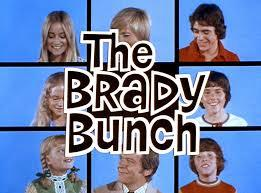

Florence Henderson
We first me her as the mom to that Brady Bunch of kids and she was the ultimate mom! I feel so blessed to have gotten to work with her and then for a book I wrote called Being Mom, getting to interview her about her real life family.

|
Florence Henderson’s Bio From the boards of the Broadway stage to television and the silver screen, Florence Henderson has conquered just about every aspect of entertainment. So successfully in fact, that the multi-talented actress, talk show host, recording artist, author, Broadway veteran, and philanthropist was inducted into the Smithsonian Institute’s first permanent Entertainment History Exhibit as one of the greatest pop cultural icons of all time in Nov 2008, as well as receiving her star on the Hollywood Walk of Fame. In July of 2012 Florence received the Lifetime Achievement Award from the National Association of Teaching of Singers. Her enthusiasm, professionalism, commitment to quality and artistry has made Ms. Henderson one of the most respected and endearing performers of our time. Henderson’s career is as active today as when she first appeared as the “Today Girl” on NBC’s TODAY SHOW and the first woman to host THE TONIGHT SHOW. Florence is no stranger to television today, appearing on such popular prime time programs as “Samantha Who” and made for television specials such as the critically acclaimed movie of the week for Hallmark entitled “Ladies of the House” and the very popular RLTV Network’s FLORENCE HENDERSON SHOW currently airing on DirectTV. Of course, she will always be best known in syndication worldwide as “America’s Favorite Mom” and matriarch Carol Brady, on the classic hit TV series THE BRADY BUNCH. Acknowledged as one of the top leading spokespersons in the U.S., Florence has been a celebrity spokeswoman for Oldsmobile, Polident, Tang, Rain Soft, Pepsi Light and Wesson Oil. In fact, THE WALL STREET JOURNAL, based on consumer appeal, rated her #5 out of the 10 top television endorsers. So, it was no surprise when she was approached as a spokeswoman to help viewers get ready for the Analog-to-Digital TV Conversion in 2009. With a career built on trust and talent, Florence maintains a busy schedule as one of the most popular and sought after motivational speakers as well as performing her one-woman show entitled ALL THE LIVES OF ME…A Musical Journey. The audience interactive experience of ALL THE LIVES OF ME…A Musical Journey, retraces her life starting as a child growing up during the Depression. Florence’s penchant for performing began as the youngest of 10 children to a sharecropper and his wife in a close-knit Midwestern family. Henderson’s mother taught her to sing, and at age two she had a repertoire of 50 songs, note perfect. At 8, Henderson was working in her father’s fields, and by 12 she was singing at the local store for groceries. Her acting career began at age 17, when Florence entered New York’s prestigious American Academy of Dramatic Arts with financial assistance from a schoolmate’s parents. By age 18 she was making her Broadway debut, and then landed a part in Joshua Logan’s musical, WISH YOU WERE HERE. Although the part was small, Florence’s flair and sheer talent attracted the attention of the legendary team of Rodgers & Hammerstein, who promptly stole her away to play the lead in the last national tour of OKLAHOMA. This multi-faceted actress broke new ground in television, as the star of one of the medium’s most beloved and longest-running situation comedies, THE BRADY BUNCH. In 1969, when Henderson took the role, she wanted to make Carol a bit more realistic, begging the studio to let the character have a job, but her request was refused. The classic series aired for 5 seasons (1969-1974); has never been off the air in this country, and currently airs in 122 countries around the world. As a producer and a talk-show host, her credits include 9 seasons of The Nashville Network’s cooking and comedy series COUNTRY KITCHEN and the experiences inspired her to write a cookbook, A Little Cooking, A Little Talking and A Whole Lot of Fun. Currently, DirectTV is airing the very popular RLTV Network’s FLORENCE HENDERSON SHOW. Florence’s shows are lively and spontaneous, offering a nostalgic pop cultural program including interviews with legendary guests and on location visits to famous Hollywood landmarks as well as first hand experiences such as flying with the Lima Lima Aviation Team. In the mid 80’s Florence met and married John Kappas who introduced her to the study of hypnotherapy, and eventually becoming a hypnotherapist herself. In 2002, Florence faced the ultimate family challenge when her husband of 18 years was diagnosed with terminal cancer. Since that time, Florence has become a featured health care and motivational speaker, specializing in women’s health and is a spokeswoman for City of Hope Cancer Research Center among her other humanitarian interests. Whether on stage, screen, feature films, television or the printed page, her legion of fans internationally and nationally can count on her to continue sharing the many talents she possesses, and the warmth and exuberance with which she does so |
|
|

Free · live on Zoom every Sunday
The Secret Pitch Formula
Join Forbes live for the Pitch Secrets Masterclass. Over 80,000 people have learned the 7-second hook, the three pitch patterns behind $2.5 billion in sales, and how to close without sounding salesy. Free, with a gift worth $500 for registering.
Sundays, 2 p.m. PT / 5 p.m. ET. Registration and the Zoom link are at pitchsecretstraining.com.